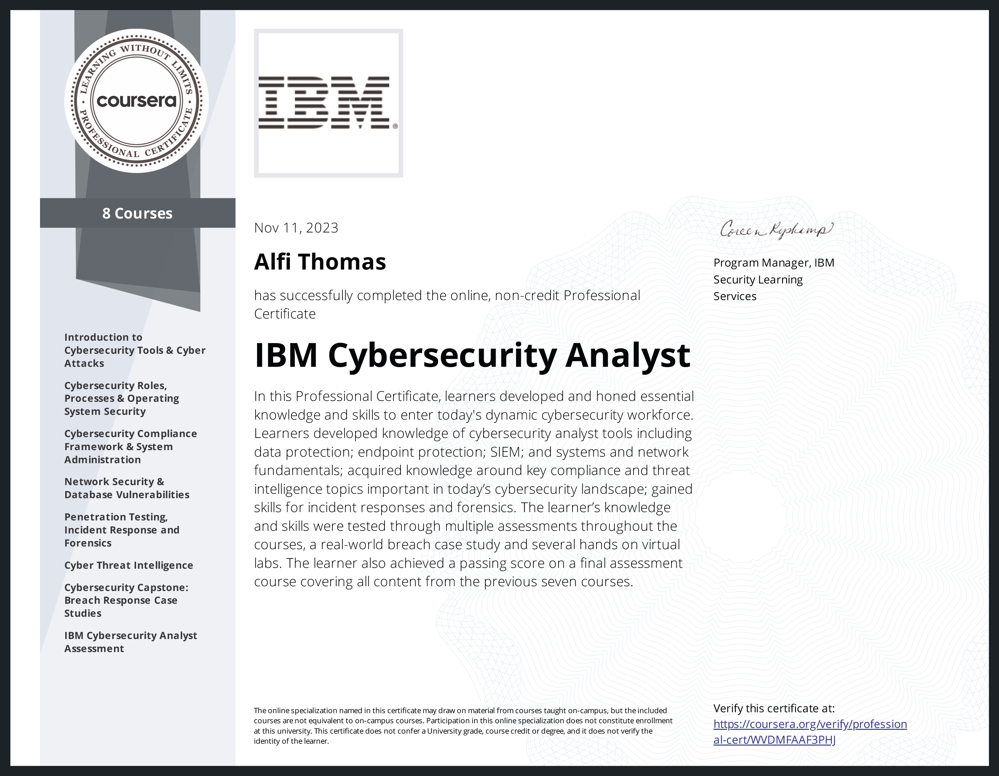

Issued to Alfi Thomas by Coursera
Authorized by IBM
The credential earner is ready for a career in cybersecurity with demonstrated ability to solve real-world problems. The individual has obtained knowledge of cybersecurity analyst tools including data protection; endpoint protection; SIEM; systems and network fundamentals; as well as key compliance and threat intelligence topics important in today's cybersecurity landscape. The earner has also gained skills for incident responses and forensics.
Alfi Thomas has successfully completed the online, non-credit Professional Certificate 'IBM Cybersecurity Analyst', authorized by IBM and offered through Coursera, on November 11, 2023.
Introduction to Cybersecurity Tools & Cyber Attacks
Cybersecurity Roles, Processes & Operating System Security
Cybersecurity Compliance Framework & System Administration
Network Security & Database Vulnerabilities
Penetration Testing, Incident Response and Forensics
Cyber Threat Intelligence
Cybersecurity Capstone: Breach Response Case Studies
IBM Cybersecurity Analyst Assessment